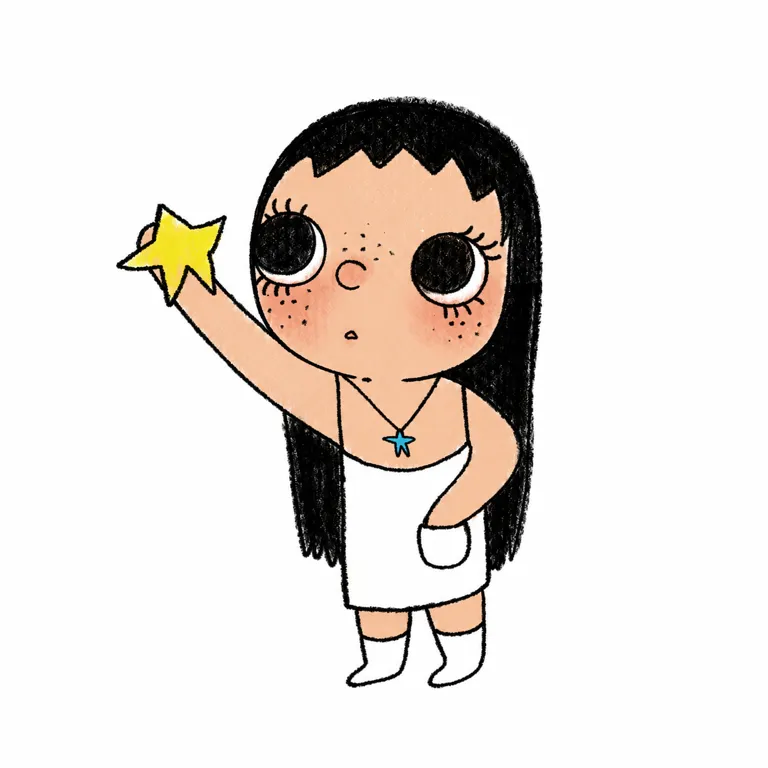

五官配置提供辨认，发型与穿着承接多种生活状态。
V01、V03、V04与V05–V07跨图仍可见大黑瞳、窄眼白、雀斑及小鼻嘴关系。
把不完美，放进每天的生活。
值得研究的是：一个能承接不同情绪的女孩，如何从社交平台的画面，进入包上、手机上和手心里。
这句话是研究归纳。公开证据已支持插画、门店和商品路径；尚不足以证明其中哪种设计导致商业增长。
查看四轮测试 核对证据
V01、V03、V04与V05–V07跨图仍可见大黑瞳、窄眼白、雀斑及小鼻嘴关系。
品牌自由与完整的表达，及举星、花朵、落泪画面。
官方门店多品类发售和CASETiFY合作页；有单一用户购入记录。
| 项目 | 已查到的证据 | 保留的边界 |
|---|---|---|
| 创作者 | 公开名「角闪石族族长」。[S02] [S06] | 法定姓名、完整履历未核；不把媒体所述姓名或股东姓名直接等同于作者。 |
| 起点 | 媒体回溯至 2025 年初社交平台插画，随后进入成都展览。[S06] [S07] | 准确首帖日、第一件商品及正式出版物未知；未找到 ISBN。 |
| 运营关系 | TOP TOY 申请稿把小玉列为「自有 IP」；其定义包括拥有或持有独家授权。[S01] | 这是 2026-03-31 草拟披露，不等同于全部著作权被买断。 |
| 公司股权 | 申请稿正文 p113–114 披露广州角闪石族艺术文化公司由集团持有 51%，其余 49%为业务合作伙伴 LIU Xingfeng 持有。[S01] | 公司股权比例不等于版权占比、版税或收益分成；该股东身份不等于创作者身份。 |
| 具体登记 | 附录 IV-17 列「角闪玉」，登记号黔作登字2025-F-01713939，2025-07-10；所列持有人为广州角闪石族艺术文化有限责任公司。[S01] | 只说明文件披露的这一登记；没有据此补全作品全集或合同地域、期限。 |
以下图片均已实际查看。品牌原图和媒体转载分别标注；每张图的解释是研究推断，不能当作作者设定。


| 层级 | 本轮观察 | 不应外推 |
|---|---|---|
| 相对稳定的身份关系 | 大黑瞳与少量眼白、雀斑、小鼻嘴及头脸比例共同承担识别。V01–V07。 | 单个大眼或雀斑并不专属；商品眼内亮点也会变化。 |
| 表达候选 | 举星、花朵化、落泪与换装容纳不同状态。V01、V03、V04。 | 不是每幅都快乐，也没有证据称每幅都是悲伤。 |
| 系列变量 | 发色、肤色、衣服、配件、花朵身体及眼内装饰。V03–V07。 | 黑发、白吊带裙、白袜不是不可改变的全IP规则。 |
| 载体适配 | 细线与颗粒进入商品后，变为刺绣、绒面、布层和配件。V05–V07。 | 照片不能证实纤维、内部骨架、尺寸或量产一致性。 |
| 未核标准 | 官方正侧背、早期改版谱系、完整角色设定书。 | 不把多张图拼成一套虚构官方母版。 |
黑发与主线
#1E1E1B
暖桃肤色
#F0C29F
淡红脸颊
#E49785
白裙与袜
#FFFFFF
手持黄星
#F5D947
蓝星项链
#48A7CD
这组色值只服务于举星画面拆解，不是全角色固定色、官方色号或生产标准。背景与屏幕会影响判断；实物需另做色样。
| 产品／载体 | 证据与时点 | 价格及规格边界 |
|---|---|---|
| 草莓花环小玉公仔 | 2026 年 4 月上海华东首站限定报道。[S05] | 价格、尺寸和官方材料未核；限定身份不等于销量领先。 |
| 云南兔、趴趴挂件、布丁玉大头 | 同一现场报道出现具名产品。[S05] | 不是完整产品目录，也不是首发或常销排行榜。 |
| 金色鱼尾挂件 | 记者 2026-07-30 杭州中心现场所述。[S06] | 当时 89 元；灵感来源属文中传闻，不作为官方设定。 |
| Beautiful Girl 毛绒盲盒 | 报道 2026-09-25 发售，6 常规＋1 隐藏；官方海外页可核系列。[S04] [S08] [S09] | 大陆首发 89 元／单抽为二手产品报道。2026-10-19 官方海外所选单盲 USD 29.99。地区与时点分开，不混为统一价。 |
| 同系列手机挂绳 | 官方商品 HTML 分列手机挂绳选项。[S04] | USD 23.99 对应挂绳；集合页 From 23.99 不能写成毛绒单盲价格。 |
| CASETiFY 合作配件 | 合作品牌官方页有手机壳及磁吸支架等商品。[S13] | 合作存在可确认；销售、合同、授权地域及动态地区价不在本轮结论中。 |
2026-06-27 一位用户发文提到快闪拥挤并买到黑皮款；这是一个购买个案，商业合作关系未明。记者现场记录选款与补货，但不等于复购数据。[S11] [S06]
地方报道中的匿名访客偏正向，带有促消费传播语境。不能据此把「年轻女性」或「自我接纳」写成已验证买家占比。[S05]
未找到足够可追溯的原始负面购买样本。明确标注 AI 生成的负评汇编不纳入用户证据；没有编造质量率、失败款或联名失败。
待验证风险：二维细线转刺绣后是否失去表情，配件是否易损、绒面是否耐洗。它们是测试问题，并非已发生缺陷。
| 看起来像成绩的数字 | 本轮如何处理 |
|---|---|
| 48 家门店 | 只记 2026-05-01 发售覆盖，不当销量。[S03] |
| 51% | 相关公司股权，不当版税比例、版权占比或利润率。[S01] |
| 商场客流、热门商品售罄、快闪战报 | 主体、库存与统计口径不足，不填入小玉年度收入；热门SKU售罄不扩写为全店售罄。[S05] [S06] |
| IP 年度营收／销量／利润／复购 | 未取得独立可靠数字，结构化数据留空；TOP TOY 全部自有IP收入不分配给小玉。[S01] |
替代解释：限量库存、商场位置、节假日或代购都可能放大排队。人气现象不能单独证明角色设计的因果作用。
以下是依据可见作品的研究重建，并非创作者原始提示词，也不能证明原作品由 AI 制作。目标始终是 V01 的举星女孩，保留手星与项链，仅移除背景散星。
执行顺序：纯文字 V1 → V2 → 参考辅助 V1 → 纯文字 V3。最后一轮未附任何图片，仍未接近。

依赖：V01 原图；中文；二维平面。英文未测试。
头脸比例、近圆黑瞳与窄眼白、C形鼻、雀斑、刘海、举星及口袋姿态接近。仍有肤色略暖、线稍粗、左臂稍粗且偏高的轻微差异。
只输入V01原图，抽出中央完整女孩，去掉背景散星。
参考图是唯一目标。请只重画画面中央正在举黄色星星的完整女孩，白底，无背景散落的彩色星星，无文字。保留她手里举着的一颗黄色星星和胸前的小蓝色星星项链。这是对可见二维作品的研究重建，不重新设计形象，不改成三维玩具。 忠实保持原图的头型和全身比例、头部方向、圆脸、黑色长直发和短而参差的刘海、白眼圈中占绝大部分面积的近圆黑瞳、细长上下睫毛、C形鼻子、额头与眼下细雀斑、极小嘴和柔淡红脸颊。头部不要扩大，不要拉成高额头长脸；眼距、黑瞳大小与朝向直接依照参考图，不增加大片眼白、不加大高光、不添加耳朵。 忠实保持原图姿态：画面左手臂从肩部斜向左上伸出，手握一颗黄色星，星在眼睛略上方；右臂弯曲，手插在白色细肩带短裙右下方的小圆底口袋里。裙身直筒不外扩、不加褶皱，双腿很短，简单白袜，无鞋底。头发两边到裙底附近，不增加蓬松发量或大碎发。 完全沿用原图的细黑线、轻微不规则轮廓和浅淡蜡笔颗粒，保留平面纸上绘画感；奶白裙袜、暖桃肤色、黑发、黄色手星和天蓝吊坠的位置不改。唯一背景变化是改为白色留白；不补原图不可见结构，不加入新物件。单角色完整居中，四周有适当空白。
| 维度 | 本轮判断 |
|---|---|
| 头型与全身 | 接近目标圆头与短身，未改成其他角色轮廓。 |
| 五官与身份 | 大黑瞳／窄眼白、C形小鼻、雀斑和短刘海接近。 |
| 色区 | 黑发、白衣袜、暖肤、黄星与蓝吊坠位置接近；肤色略暖。 |
| 姿态与线条 | 举星、插袋接近；左臂略粗偏高，线略粗。 |
| 适用边界 | 仅二维特定画面；没有精确复制、纯文字稳定性或量产通过的结论。 |
候选启发：先找到用户不愿被规定的生活状态，再写允许式表达；需要访谈验证，避免只贴自爱口号。
候选启发：固定面部关系并允许系列变化；本轮纯文字未通过，暂停原创找形，不借用专属识别组合。
候选启发：按头像、随身配件、毛绒分别处理信息密度；先做实物材料与洗护验证。当前暂停实物概念生成。
相似性边界：不要把近圆巨黑瞳＋窄眼白＋C形小鼻＋细雀斑＋该头脸比例整组搬作新IP；仅换发色或衣服不足以原创。
识别落在五官配置及比例，非黑发白裙的固定装扮。 大眼、雀斑和女孩本属公共元素，识别依赖组合、创作者内容语境及持续传播。
将自由和接纳自己放入日常场景；不是完整故事宇宙的证明。
路人层：可亲近、可随身携带的女孩。
熟悉层：读者可能把不同画面代入自己的状态；这是待访谈验证的假设。
不把研究假设改写成真实用户一致意见。
检索截至 2026-10-19。转载按来源家族去重；同一战报被多家引用不增加独立证据。来源编号保留研究记录顺序，因此跳过 S14。
边界：草稿可能修改，不是最终招股书；未找到2025年11月入股月份原始交易记录；公司股权不等于角色版权百分比；特定登记不代表全部作品版权链；所有自有IP收入不能归给小玉
边界：未取得最早小红书原帖；历史动态仅搜索索引；出生年、法定姓名、国籍和学历没有直接履历核验
边界：日期是2026年，不是2025年；48店为渠道动作，不是销量；无单SKU尺寸材料价格
边界：尺寸栏无信息，正文无材料；集合页最低价23.99不是单盲价；海外端盒页面和HTML显示不一致，未采用；公开价格是访问时点，不是大陆首发价
边界：政府传播内容具有促消费宣传语境；匿名访谈不是总体满意度抽样；后续商场客流11万/16万不是IP客流；后续100万元单日销售主体未拆清，不纳IP收入
边界：页面显示2026-07-31；其他平台8月转载不改变现场事件日期；作者00后视传履历为媒体转述；西湖醋鱼灵感文中为据说，未确认；日销20万元转引杭州新闻，不是独立审计；暂无线上店是当时观察，不是截至10月仍成立
边界：2025年11月未取得原始交易记录；文中51%与超过51%写法不一致，以申请稿51%为准；同文同时讨论上秋子，不能把其争议移给小玉；商标代理变更不证明完整法律控制合同；媒体战报非IP年度审计收入
边界：匿名行业受访者观点不是因果证明；文章公司整体收入亏损不能归给小玉；商场战报与既有材料重叠，不算重复独立验证；YOYO与小玉为不同角色
边界：非品牌原始商品规格页面；中文款名有疑似错字，最终需官方图核字；没有材料或高度正文；不能作为销量或爆款证据
边界：仅零售商规格，无官方包装核验；TAL是商家自有鉴定体系，非独立公证；同站Love in the Garden普通/隐藏页冲突，弃用隐藏名字与1/72概率；销售倒计时和库存提示不作真实销量数据
边界：单一直接用户样本，无代表性；未确认商业合作关系；没有材质或质量检查
边界：多个业绩数字明确转引剁椒，不算独立 corroboration；本轮未逐一找到合作品牌原始页，不把全部合作作为已核事实
边界：不采用动态地区价格；合作合同及销量未知
边界：只查看第1、5、6张图及3条可见评论；界面日期10-05无年份；配图无原始授权来源，不作为官方设定母版